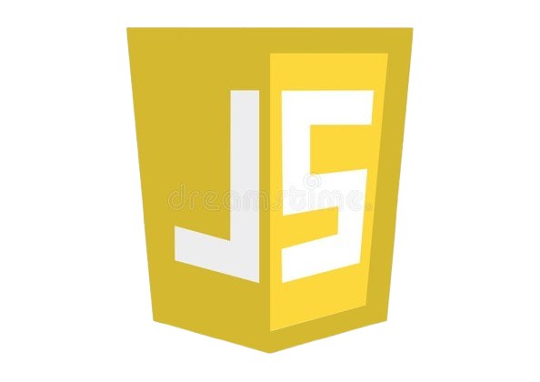

HTML: Web Integration Expertise
With solid experience in HTML, I have developed a deep understanding of web page structures, layout, and accessibility. My approach is always focused on optimizing the user experience and creating well-structured, high-performance web content.
CSS: Visual Design and Layout Expertise
I am passionate about web development, and I consider HTML and CSS as powerful tools to bring ideas to life. With HTML, I master the structure of any website, ensuring it is clear, accessible, and optimized for all users. In CSS, I am capable of creating modern and responsive layouts, playing with styles, animations, and positioning to make the user experience as smooth and enjoyable as possible.

JS: Client-side Expertise
JavaScript is an essential client-side language that allows websites to be interactive and dynamic. It offers great flexibility and numerous possibilities to create rich and smooth user experiences. The more I work with JavaScript, the more I realize its power and ability to solve complex challenges in an elegant way. Every day, I continue to strengthen my mastery of this language, and I am convinced it opens doors to increasingly high-performance and innovative web development.
PHP: Server-side Expertise
PHP is a language I master perfectly for server-side development. Thanks to hands-on experience, day and night, I have been able to refine my skills and develop robust and efficient solutions. My expertise in PHP allows me to create high-performance, secure, and scalable web applications. With each project, I continue to perfect my abilities and fully leverage the potential of this language to deliver solutions tailored to users' specific needs.